Accept every Fawry payment method on your Odoo website: cards with 3-D Secure, Fawry reference codes paid in cash, mobile wallets, myFawry, Fawry Yellow Card, valU, Forsa and Souhoola.
Odoo 20.0 Community & Enterprise Egypt · EGP English & Arabic No PCI-DSS scope Installments & payment split
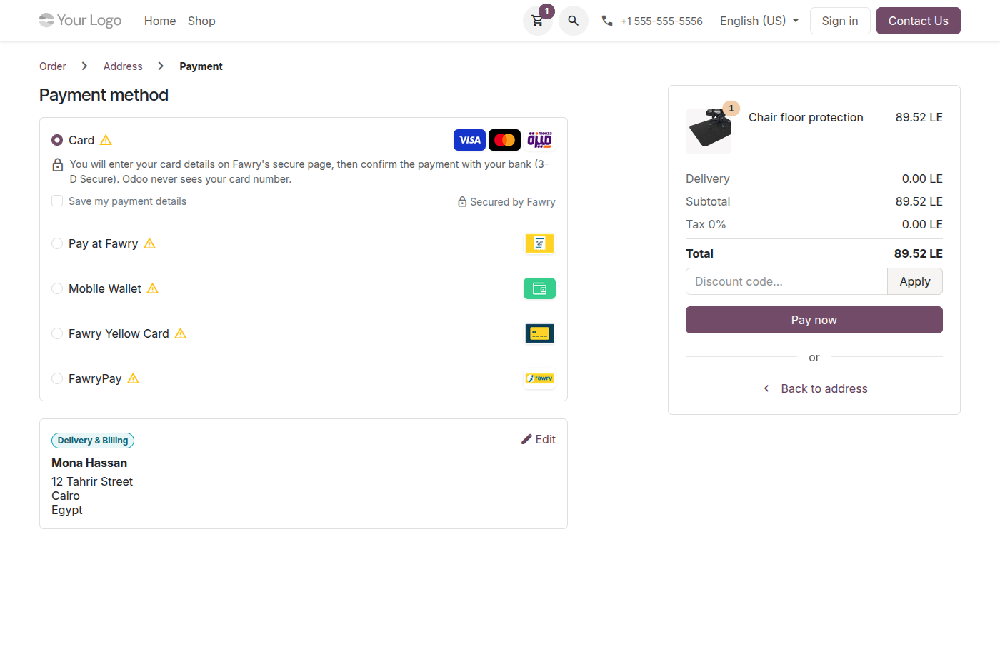
Your customers choose how to pay at checkout, each method with its logo.
Many customers in Egypt pay with Fawry: in cash at one of Fawry's outlets, with a mobile wallet, with the myFawry app, in installments or with a card. Odoo 20 has no Fawry payment provider. This module connects your Odoo shop, your invoices and your payment links to Fawry, and keeps every payment in sync with Fawry until it is paid, expired, canceled or refunded.
Cards (Visa, Mastercard, Meeza), Pay at Fawry, mobile wallets, myFawry, Fawry Yellow Card, valU, Forsa, Souhoola and FawryPay, each with its logo. Turn on the ones of your Fawry account.
FawryPay's checkout opens in a pop-up window or a side panel on your page, or in a full page. Reference codes and wallet QR codes are shown on your own confirmation page.
Fawry's notifications, signed returns, a live waiting page and a check every 15 minutes confirm the orders as soon as they are paid, even when a notification is missed.
Customers add, choose and remove their cards on your website, each shown with its expiry date, and kept in line with Fawry. Card numbers are typed on Fawry's page only; Odoo keeps Fawry's token.
A "Fawry Pay" bank journal in EGP is created when you install the module. Paid orders are posted in it, apart from your other banks. Refunds, full or partial, are sent to Fawry from Odoo.
Every text is translated into Arabic, the layout follows right-to-left websites and your theme's colours, and Fawry's pages open in the customer's language.
Card, Pay at Fawry and Mobile Wallet are turned on at installation. Turn on the others once Fawry has enabled them on your merchant account. Methods other than cards are offered to customers in Egypt paying in Egyptian pounds.
| Method | How the customer pays | |
|---|---|---|
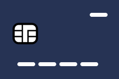 |
Card 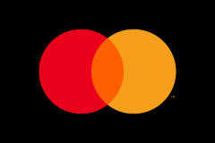 |
Visa, Mastercard or Meeza card, confirmed with the bank (3-D Secure). The card can be saved for the next orders. |
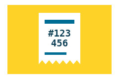 |
Pay at Fawry | The customer gets a Fawry reference code and pays it in cash at any Fawry outlet, or in the myFawry app, before the deadline. |
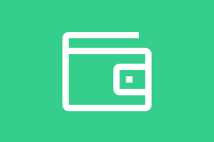 |
Mobile Wallet | Vodafone Cash, Etisalat Cash, Orange Cash, WE Pay or a bank wallet: a payment request sent to the wallet, or a QR code to scan. |
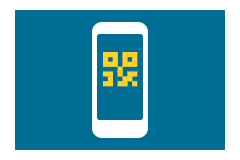 |
myFawry | The customer scans a QR code or opens a link in the myFawry app and pays with any method saved in the app. |
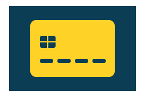 |
Fawry Yellow Card | Installments with Fawry's own card, on FawryPay's checkout. |
| valU | Buy now, pay later with valU, on FawryPay's checkout. | |
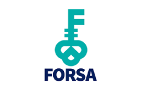 |
Forsa | Installments with Forsa, on FawryPay's checkout. |
| Souhoola | Installments with Souhoola, on FawryPay's checkout. | |
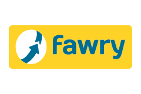 |
FawryPay | One choice in Odoo that opens FawryPay's checkout with every method of your account; the customer picks one there. |
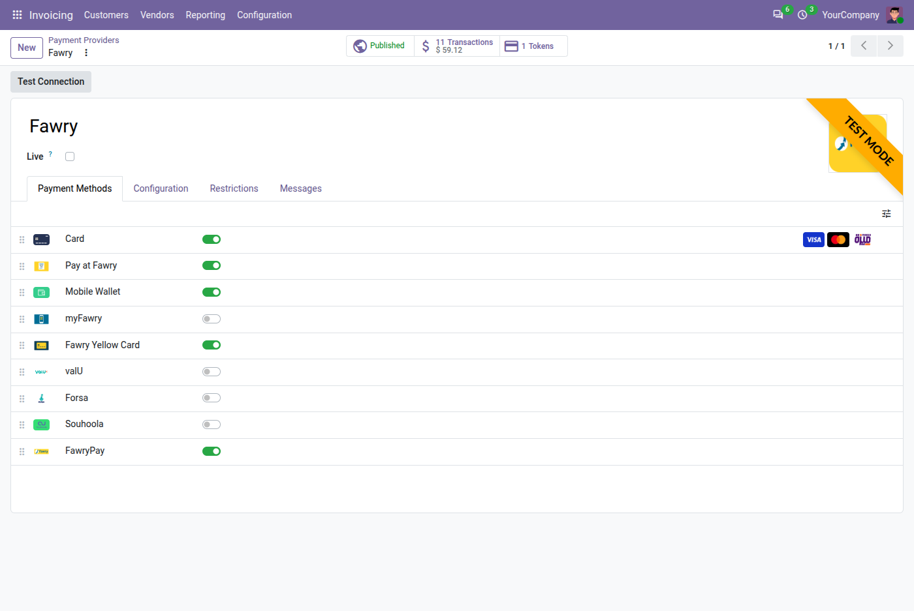
Turn each method on or off and drag them in the order your customers should see them.
Choose on the provider how your customers pay. You can switch at any time; payments already started keep working.
The customer picks a method in Odoo, then pays on FawryPay's secure checkout, which opens directly on that method. Fawry handles 3-D Secure, the reference codes and the installment steps.
Best for: the quickest start, with every method of your account.
Odoo talks to Fawry directly: it creates reference codes, wallet requests, wallet QR codes and myFawry payments and shows them on your website. Cards are entered on Fawry's secure card page, saved if the customer wishes, and charged with 3-D Secure.
Best for: saved cards and a payment experience that stays on your website.
| FawryPay Express Checkout | Server-to-Server APIs | |
|---|---|---|
| Card | On FawryPay's checkout | On Fawry's secure card page, then 3-D Secure |
| Pay at Fawry | The code is shown on FawryPay's checkout | The code is shown on your website |
| Mobile Wallet | On FawryPay's checkout | Request to the wallet, or QR code, on your website |
| myFawry | On FawryPay's checkout | QR code and app link on your website |
| Fawry Yellow Card, valU, Forsa, Souhoola, FawryPay | On FawryPay's checkout | On FawryPay's checkout |
| Saved cards | No | Yes, at checkout or from "My payment methods" |
| Card numbers in Odoo | Never | Never: Odoo keeps only Fawry's card token |
Checkout display. Wherever FawryPay's checkout is used, it opens the way you choose: in a full page, in a pop-up window or in a side panel next to your page. On iPhone, iPad and Mac it always opens in a full page, as Fawry requires.
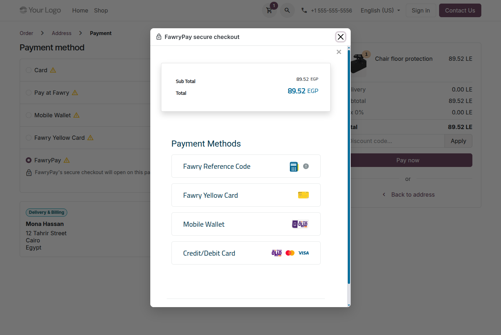
FawryPay's checkout in a pop-up window.
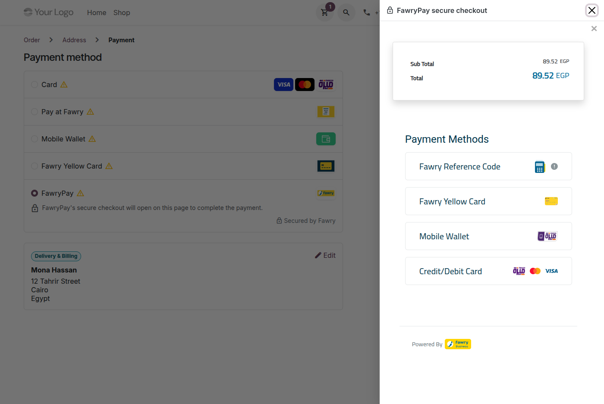
The same checkout in a side panel: the order stays in view.
The Fawry methods appear at the payment step of your shop, on invoices in the customer portal and on the payment links you send. Here is the journey for each kind of method.
With the Express integration, the card is entered on FawryPay's checkout instead.
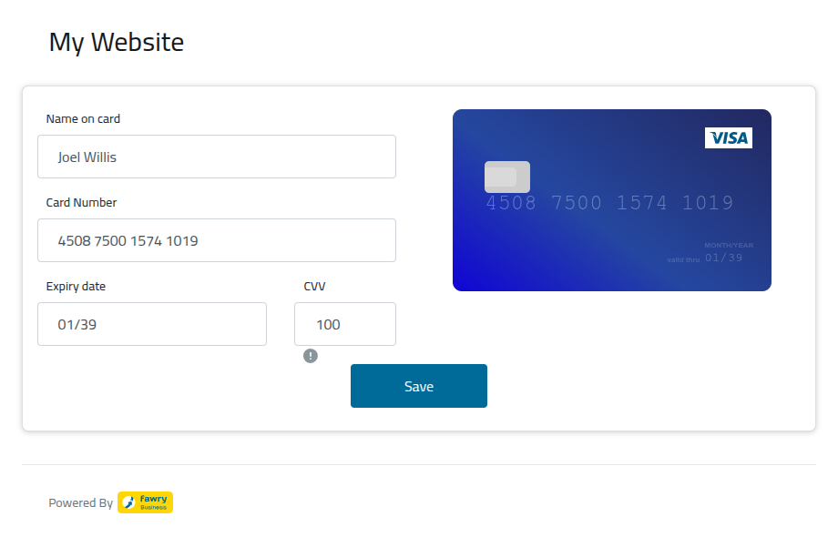
Fawry's secure card page (test card).
The code is also in the order in the customer's portal, so it can be found again later.
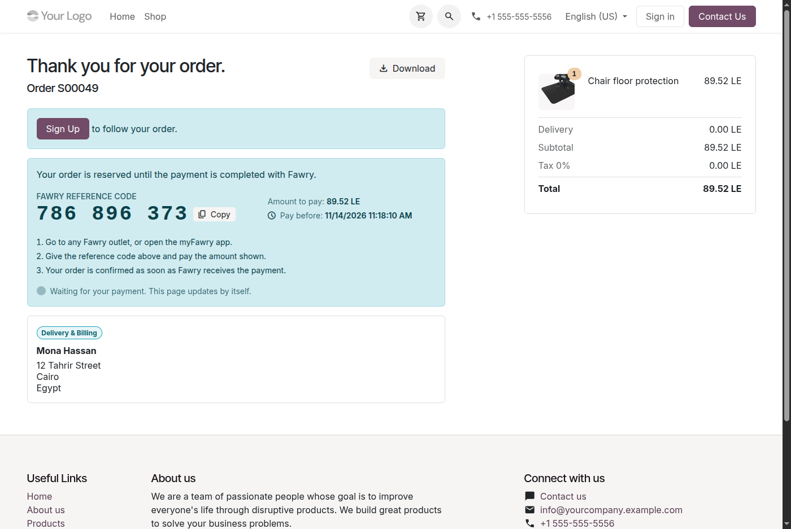
Reference code, amount, deadline and steps.
myFawry works the same way, with a QR code and a link that opens the myFawry app.
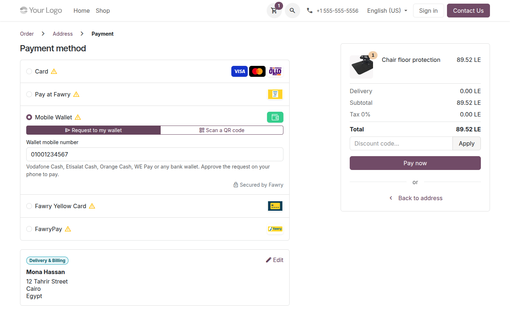
Request to the wallet, or QR code.
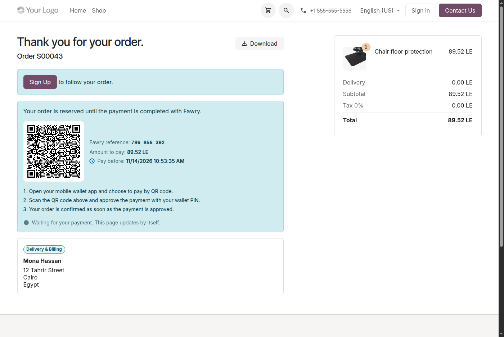
The wallet QR code on the confirmation page, with the amount and the deadline.
Signed-in customers can keep their cards and pay the next orders in a few clicks. See Saved cards: add, choose, remove.
Every screen works on phones. When the customer browses your website in Arabic, the payment forms, the instructions and the messages are in Arabic, right to left, and Fawry's pages open in Arabic too.
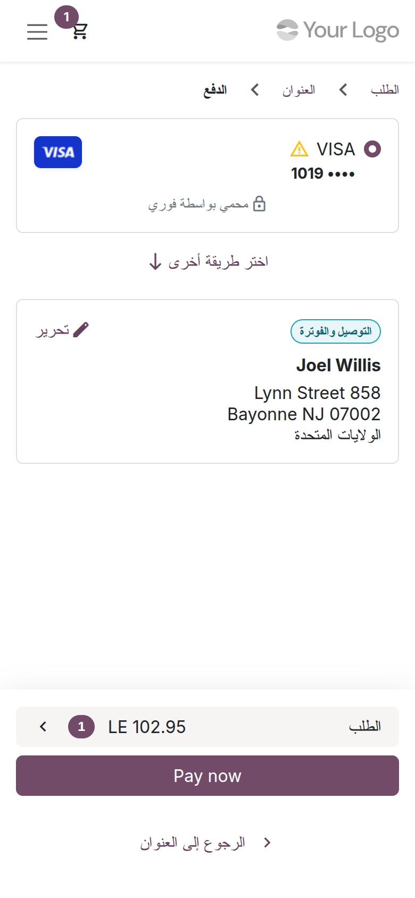
A saved card at checkout, on a phone, in Arabic.
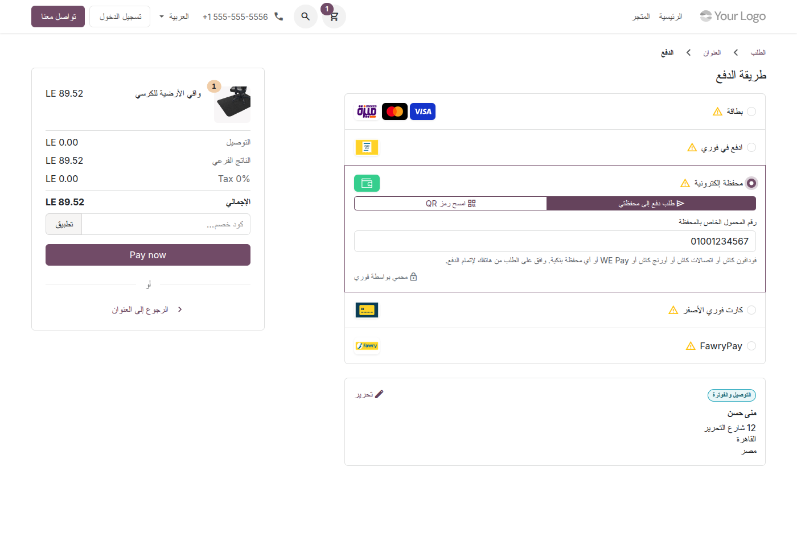
The payment step in Arabic.
With the Server-to-Server integration, signed-in customers manage their own cards from your website. They add a card once, pick it at the next checkout or pay with a new one, and remove the cards they no longer want. Card numbers are typed on Fawry's secure page only: Odoo keeps Fawry's card token, the last four digits and the expiry date.
Two ways:
The card is listed with its brand logo, its last four digits and Expires MM/YY. A card saved twice is kept once.
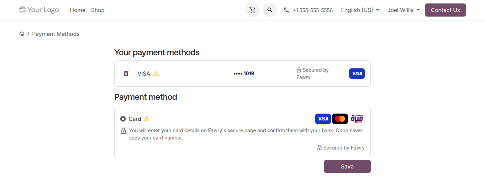
"My payment methods" with two saved cards and the form to add another.
At the payment step, the customer's saved cards come first, the newest on top. The customer picks one and clicks Pay now; Fawry asks the bank to confirm the payment (3-D Secure), so a saved card is never charged without the cardholder. To use another card, the customer clicks Choose another method, picks Card and may tick Save my payment details to keep it too. The same choice appears when paying an invoice or an order from the portal, or a payment link.
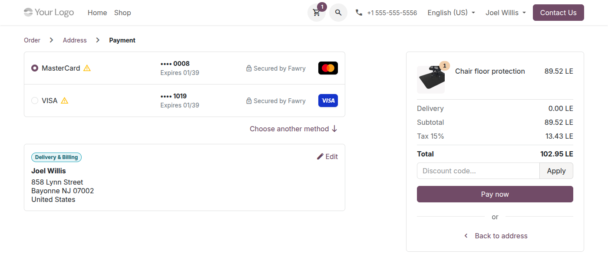
The saved cards at checkout.
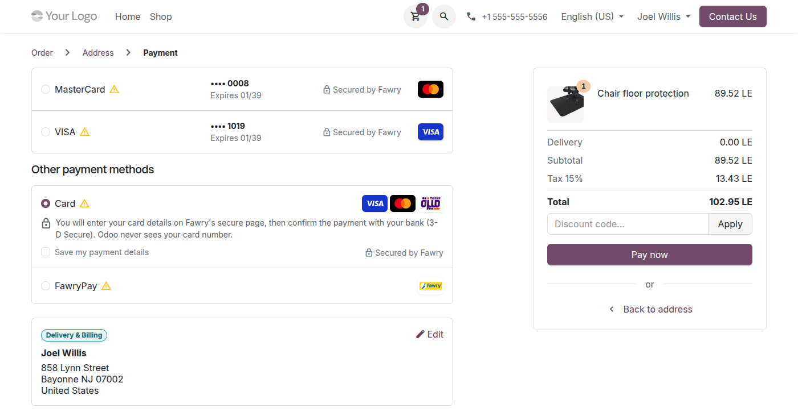
"Choose another method": a new card, saved if the customer wishes.
In My Payment Methods, the customer clicks the bin next to a card and confirms. The card is removed from Odoo and deleted at Fawry at once.
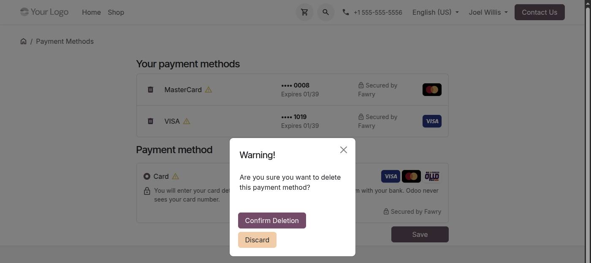
Removing a card.
Each time cards are shown to a customer, Odoo retrieves the customer's cards from Fawry (at most every 10 minutes):
Cards that customers entered for a single payment are never added to their saved cards.
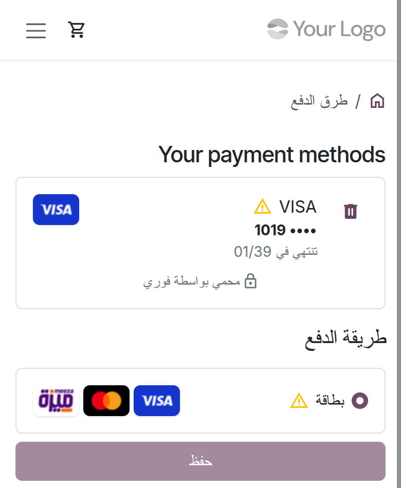
The same page on a phone, in Arabic.
To turn it on: on the Fawry provider, choose Server-to-Server APIs and tick Allow Saving Payment Methods. Customers must be signed in. FawryPay Express Checkout can't save cards: Fawry's hosted checkout doesn't return them to Odoo.
Customers can pay by card in monthly installments, with the installment plans of their bank that Fawry activated on your account. Nothing to set up in Odoo beyond one tick: the plans, their banks, rates and limits come from Fawry.
A plan is offered only when it is active and online at Fawry, in its validity dates, when the amount is within its limits, when the card belongs to the plan's bank, and, for the plans limited to some products, when every product of the order is one of them. When no plan fits, the card is charged in full as usual.
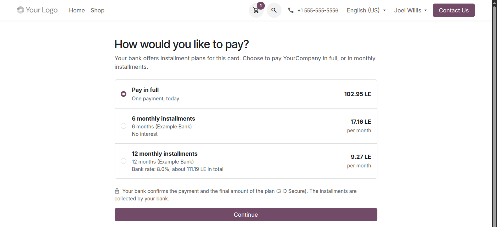
The choice offered to the customer (example plans on Fawry's test environment).
To turn it on: on the Fawry provider (Server-to-Server APIs), tick Bank Installments. Click Show Installment Plans to see the plans Fawry activated on your account; ask Fawry to activate the plans of the banks you work with. Bank installments need the Server-to-Server APIs integration.
Share each payment between your Fawry account and the sub-accounts you created in Fawry's dashboard, for example the sellers of a marketplace, a partner's commission or another company of your group. Fawry pays each share to the bank account of its sub-account; nothing changes for the customer.
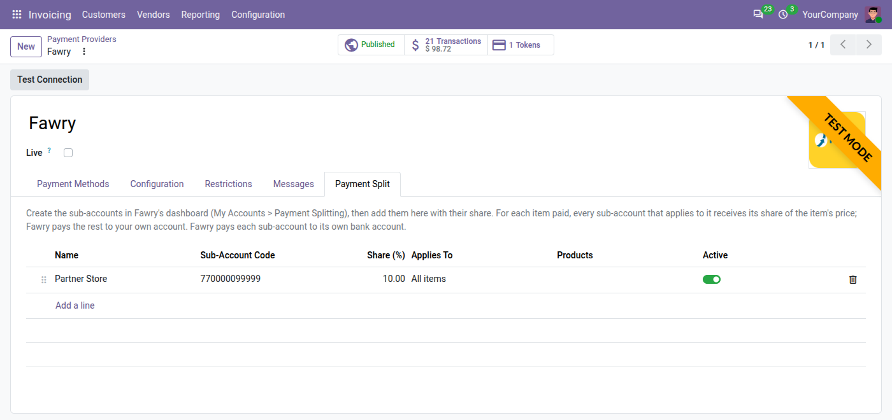
The Payment Split tab of the provider.
To turn it on: ask Fawry to enable Payment Splitting on your account and create the sub-accounts in Fawry's dashboard (My Accounts > Payment Splitting). Then tick Payment Split on the Fawry provider and add each sub-account with its code and share in the Payment Split tab. Turn off the tick, or archive a sub-account, to stop sharing.
Plan about 15 minutes. You need the Administration / Settings access right.
In Apps, search for Fawry Payments and click Activate. The installation:
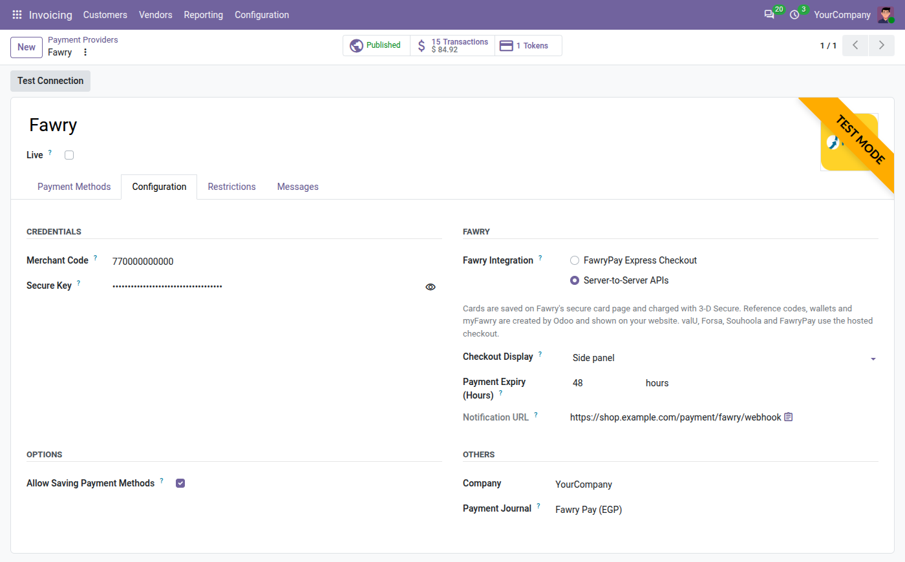
The Configuration tab with the Server-to-Server integration.
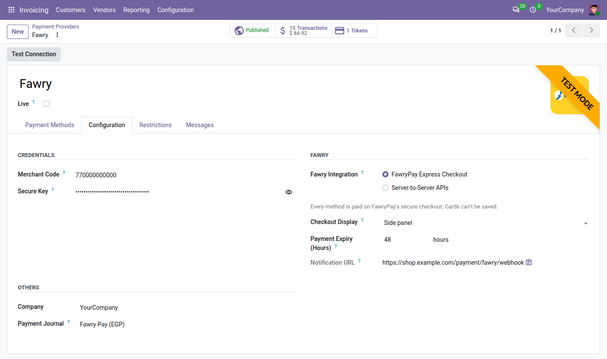
The same tab with FawryPay Express Checkout.
Copy the Notification URL shown on the provider (it ends with /payment/fawry/webhook) and
send it to Fawry for your test and live accounts. Fawry calls it when a payment changes, for example when
a reference code is paid at an outlet. Odoo also sends it with every payment.
In the Payment Methods tab, turn on the methods Fawry enabled on your account and drag them in the order you want. For cards, the brands shown (Visa, Mastercard, Meeza) are set on the Card method. Methods that are not enabled at Fawry would be refused at payment time.
In the Configuration tab, Payment Journal shows Fawry Pay. Keep it, so that the money collected by Fawry is followed apart from your other banks, or choose another bank journal. See Accounting.
While the provider is unpublished, its methods show on your website only to your own team, signed in with their Odoo user: place a few test orders that way. To let a customer test too, click the Unpublished button at the top of the provider. In test mode, Odoo shows a warning sign next to each method and Fawry takes no real money.
| To test | Use |
|---|---|
| Visa card | 4508 7500 1574 1019, expiry 01/39, CVV 100 |
| Mastercard | 5123 4500 0000 0008, expiry 01/39, CVV 100 |
| 3-D Secure | On Fawry's test bank page, keep "Authentication Successful" and click Submit |
| Pay at Fawry | Pay the reference code on Fawry's test outlet page (Fawry's developer portal, "Pay order") |
Test card numbers are Fawry's published test data and may change; Fawry's developer portal has the current list.
| Setting | What it does |
|---|---|
| Live | Unticked: Fawry's test (staging) environment, no real money. Ticked: production. |
| Merchant Code | The account number Fawry gave you. Test and live accounts have different codes. |
| Secure Key | Signs every request sent to Fawry and checks Fawry's answers. Visible and editable by administrators only. |
| Fawry Integration | FawryPay Express Checkout or Server-to-Server APIs. |
| Checkout Display | Full page, pop-up window or side panel, for FawryPay's checkout. |
| Payment Expiry (Hours) | How long reference codes, wallet requests and QR codes stay payable. Default 48. |
| Notification URL | Read-only. The address Fawry calls when a payment changes; give it to Fawry. |
| Allow Saving Payment Methods | Server-to-Server only: customers can save cards. |
| Bank Installments | Server-to-Server only: customers can pay by card with the installment plans of their bank. Show Installment Plans lists the plans Fawry activated. See Bank installments. |
| Payment Split | Shares each payment with the sub-accounts of the Payment Split tab (name, sub-account code, share, items it applies to). See Payment split. |
| Payment Journal | Where paid orders are posted. Fawry Pay by default. |
| Currencies | Egyptian pound (EGP) only. |
| Restrictions tab | Odoo's usual limits: maximum amount, countries, websites. |
| Messages tab | The texts shown to customers, for example the message of a pending payment. |
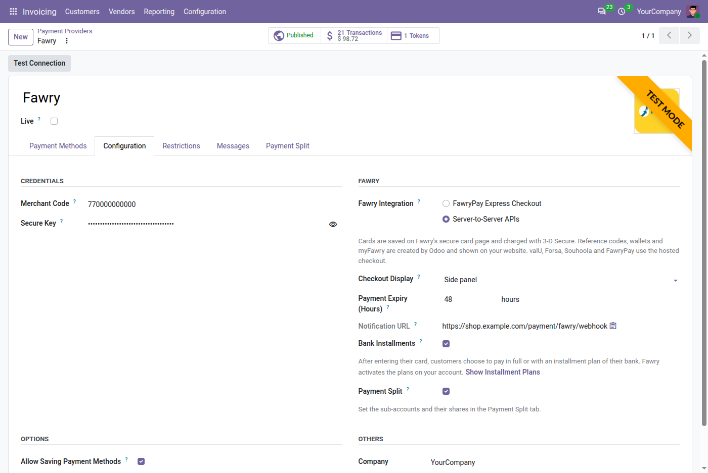
Bank Installments and Payment Split, turned on from the provider.
Several companies. Each company has its own Fawry provider, with its own credentials, and its own Fawry Pay journal. A company created later gets its journal when its chart of accounts is installed.
Your sales and accounting team works with Fawry payments like with any other Odoo payment. Here are the Fawry-specific tasks.
The transaction's Fawry tab shows the payment deadline, the wallet number, the fees Fawry added (if any), the installment plan chosen, the customer's Fawry profile and the last status check. When Fawry refused the payment, it also shows the error code, what it means and what to check (see Fawry error codes). The Fawry reference is the transaction's Provider Reference.
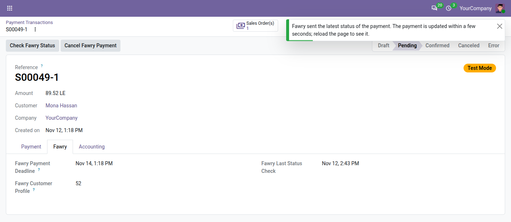
A pending Fawry payment, after Check Fawry Status.
A customer says they paid, but the order still waits? Open the transaction and click Check Fawry Status. Odoo asks Fawry for the latest status; reload the page after a few seconds to see the transaction confirmed. You rarely need it: Odoo already checks pending payments every 15 minutes.
If the customer cancels the order, or you no longer want a reference code, wallet request or myFawry payment to be paid, click Cancel Fawry Payment on the pending transaction and confirm. Fawry cancels it and the customer can no longer pay it. Unpaid codes also expire by themselves after the payment expiry time.
You can refund several times, up to the amount paid. Card refunds go back to the customer's card.
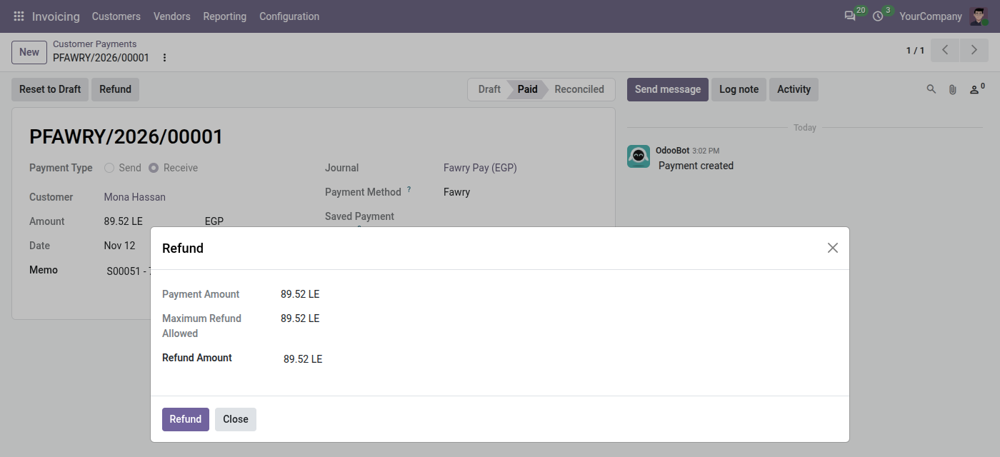
The refund window on a payment of the Fawry Pay journal.
For an order or invoice paid outside the shop, use Odoo's Generate a Payment Link (in the action menu of sales orders and invoices). The customer opens it and pays with any Fawry method. If a reference code expired, send a new link: each payment attempt gets a new code.
The Tokens smart button of the provider lists the saved cards (last four digits only). Each card shows its Card Expiry and when it was Last Checked at Fawry. Archiving a card in Odoo deletes it at Fawry too; the customer can do the same from their account. Cards that Fawry no longer has, or that have expired, are archived by Odoo the next time they would be shown to the customer.
The module creates, in each company, a bank journal for Fawry:
| Name | Fawry Pay (in Arabic "مدفوعات فورى") |
| Type | Bank |
| Short code | FAWRY (payments are numbered PFAWRY/<year>/00001, PFAWRY/<year>/00002…) |
| Currency | EGP |
| Incoming payment method | Fawry, linked to the Fawry provider |
| Bank account | Its own account in your chart of accounts |
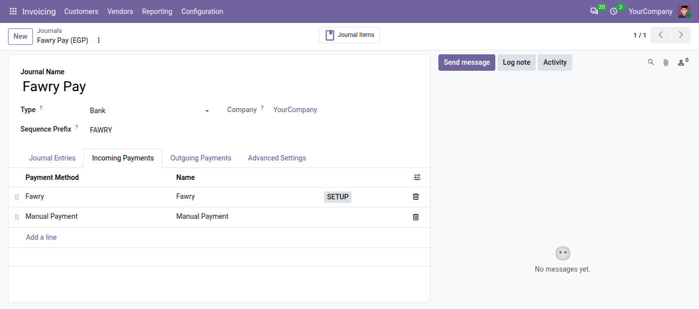
The Fawry Pay journal and its Fawry payment method.
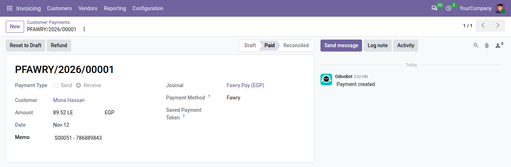
A card payment from the shop, posted in Fawry Pay.
How each Fawry status shows in Odoo:
| At Fawry | Transaction in Odoo | What happens |
|---|---|---|
| New, Unpaid | Pending | The customer still has to pay: the code, QR code or request is shown with the deadline. The order waits. |
| Paid | Confirmed | The order is confirmed and the payment posted in Fawry Pay. |
| Expired | Canceled | "The payment expired before it was made." Send a new payment link if the customer still wants to pay. |
| Canceled | Canceled | "The payment was canceled at Fawry." |
| Failed | Error | "The payment was declined", with Fawry's reason, for example a card refused by the bank. |
| Authorized | Pending | Waits until Fawry collects the payment. |
| Refunded, Partially refunded | Confirmed | The payment stays confirmed; each refund is its own transaction. |
How Odoo learns the status, from fastest to slowest:
Notifications are never trusted alone: Odoo asks Fawry for the status before recording it.
Every error code of Fawry's documentation, plus the ones met on Fawry's platform, is explained in Odoo. When Fawry refuses a payment or a request:
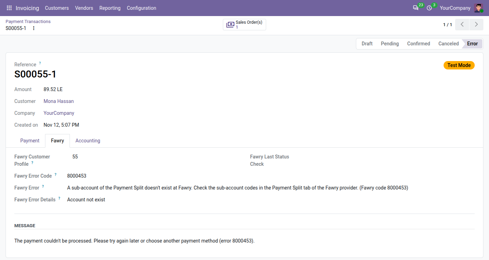
What your team sees.
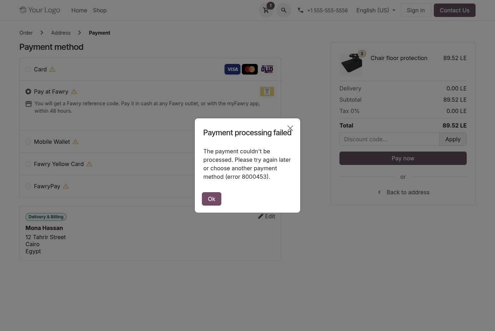
What the customer sees for the same error.
| Code | Meaning | Shown to the customer |
|---|---|---|
99901 | The bank that issued the card refused the payment. Please contact your bank or use another card. | As it is |
99903 | The payment details were refused, or the card terminal of the merchant account is inactive. Ask Fawry to check the card payments of your account. | Neutral message with the code |
99904 | The bank refused the payment because the card is reported lost or stolen. Please contact your bank. | As it is |
99905 | The bank won't accept this payment. Please use another card or contact your bank. | As it is |
99906 | The bank flagged the card as fraudulent. Please contact your bank. | As it is |
99907 | The bank declined the payment. Please contact your bank. | As it is |
99908 | This payment can't be made right now. Please try again later or use another card. | As it is |
99910 | This payment can't be made right now. Please try again later or use another card. | As it is |
99912 | Fawry couldn't process the card because the card payments of the merchant account aren't set up correctly. Ask Fawry to check them. | Neutral message with the code |
99913 | The amount of the payment was refused as invalid. | Neutral message with the code |
99914 | The card number isn't valid. Please check it and try again. | As it is |
99915 | The bank of this card doesn't exist. Please check the card number and try again. | As it is |
99922 | The bank didn't respond. Please try again. | As it is |
99930 | The merchant account isn't set up for this payment. Ask Fawry to check your account. | Neutral message with the code |
99931 | The bank doesn't allow this card for this kind of payment. Please use another card. | As it is |
99934 | The bank declined the payment because it suspects fraud on this card. Please contact your bank. | As it is |
99937 | The bank refused the payment. Please contact your bank. | As it is |
99939 | The bank refused the payment. Please contact your bank. | As it is |
99941 | The card is reported lost. Please contact your bank. | As it is |
99942 | This card can't be used for this kind of payment. Please use another card. | As it is |
99943 | The card is reported stolen. Please contact your bank. | As it is |
99949 | The bank doesn't allow this card for online payments. Please contact your bank or use another card. | As it is |
99951 | The card doesn't have enough funds for this payment. | As it is |
99954 | The card has expired. Please use another card. | As it is |
99955 | The card PIN is incorrect. Please try again. | As it is |
99956 | The bank says this card number doesn't exist. Please use another card. | As it is |
99957 | The bank doesn't allow this card for this kind of payment. Please use another card. | As it is |
99958 | The card processing account of the merchant isn't set up correctly. Ask Fawry to check it. | Neutral message with the code |
99959 | The bank declined the payment because it looks fraudulent. Please contact your bank. | As it is |
99961 | The payment would exceed the limit of the card. | As it is |
99962 | The card can't be used in this region or country. | As it is |
99963 | The bank declined the payment because it failed a security check. Please contact your bank. | As it is |
99965 | The payment would exceed the usual spending limit of the card. Please contact your bank. | As it is |
99967 | The bank declined the payment because the card is suspected to be counterfeit. Please contact your bank. | As it is |
99970 | The bank refused the payment. Please contact your bank. | As it is |
99971 | The bank refused the payment because the card PIN was never changed. Please contact your bank. | As it is |
99975 | The PIN was entered wrongly too many times. Please contact your bank. | As it is |
99976 | This payment can't be made right now. Please try again later or use another card. | As it is |
99977 | This payment can't be made right now. Please try again later or use another card. | As it is |
99978 | This payment can't be made right now. Please try again later or use another card. | As it is |
99979 | This payment can't be made right now. Please try again later or use another card. | As it is |
99980 | This payment can't be made right now. Please try again later or use another card. | As it is |
99981 | This payment can't be made right now. Please try again later or use another card. | As it is |
99984 | The payment failed on the side of the bank. Please contact your bank. | As it is |
99985 | The payment failed because of its amount. Please try again with another amount or another card. | As it is |
99986 | A technical error at the bank stopped the payment. Please try again later. | As it is |
99987 | This payment can't be made right now. Please try again later or use another card. | As it is |
99988 | A technical error at the bank stopped the payment. Please try again later. | As it is |
99989 | A technical error at the bank stopped the payment. Please try again later. | As it is |
99991 | Fawry couldn't reach the bank to approve the payment. Please try again. | As it is |
99992 | The payment couldn't be sent to the bank. Please try again. | As it is |
99994 | A technical error stopped the payment. Please try again later. | As it is |
99996 | A technical error stopped the payment. Please try again later. | As it is |
21004 | Fawry couldn't validate the amount of the payment. | Neutral message with the code |
21010 | The amount is above the limit allowed for this payment method. Please choose another payment method. | As it is |
55006 | This card isn't allowed for this payment. Please use another card. | As it is |
9901 | The merchant code is missing or invalid. Check the Merchant Code of the Fawry provider. | Neutral message with the code |
9903 | Fawry couldn't process the request. Check the Merchant Code of the Fawry provider; if it is right, the payment uses an option Fawry hasn't enabled on the account. | Neutral message with the code |
9910 | The mobile number is missing or invalid. Please check your phone number and try again. | As it is |
9919 | The card isn't valid or its expiry date is wrong. Please use another card. | As it is |
9935 | The refund is higher than the amount paid. | Neutral message with the code |
9938 | Fawry has no order with this reference. | Neutral message with the code |
9944 | Fawry found the request invalid: a required value is missing, such as the customer profile or the card token, or a value isn't accepted, such as an installment plan. | Neutral message with the code |
9946 | The signature is wrong. Check the Secure Key of the Fawry provider, and that Live matches the environment of your credentials. | Neutral message with the code |
9954 | The order isn't paid. | Neutral message with the code |
9984 | The order is already canceled. | Neutral message with the code |
9985 | The amounts shared between the accounts don't add up to the price of an item (Payment Split). | Neutral message with the code |
8000453 | A sub-account of the Payment Split doesn't exist at Fawry. Check the sub-account codes in the Payment Split tab of the Fawry provider. | Neutral message with the code |
10027 | Fawry doesn't know this saved card: it may have been deleted already. | Neutral message with the code |
10044 | Card payments without 3-D Secure aren't enabled on the merchant account. | Neutral message with the code |
Open the transaction: its Fawry tab explains the code. Every code is also listed in Fawry error codes.
Plans appear only with the Server-to-Server APIs, with Bank Installments ticked, and when Fawry has an active plan for the card's bank and the amount. Click Show Installment Plans: if the list is empty, ask Fawry to activate the plans of your banks.
8000453: a sub-account code of the Payment Split tab doesn't exist at Fawry; copy it again from Fawry's dashboard. 9985: the shares of an item didn't add up to its price; check the shares of the sub-accounts. With Express Checkout, Fawry checks the sub-accounts when the customer pays on its checkout.
Check the merchant code and the secure key, without spaces. Test credentials work only with Live unticked, live credentials only with Live ticked.
Click Check Fawry Status on the transaction. If it happens often, check that Fawry has your notification URL, that your website is reachable over HTTPS, and that the scheduled action Fawry: check pending payments is active (Settings › Technical › Scheduled Actions, in developer mode).
The transaction is canceled. Send the customer a new payment link for the order or the invoice; paying it creates a new code. Raise the Payment Expiry if your customers need more time.
Fawry no longer has it (it was removed at Fawry) or it has expired, so Odoo stopped offering it. The customer adds the card again from My Account › Payment Methods, or pays with a new card and ticks Save my payment details.
Saving cards needs the Server-to-Server integration and Allow Saving Payment Methods ticked, and the customer must be signed in.
On iPhone, iPad and Mac, FawryPay's checkout always opens in a full page, as Fawry requires. On other devices it follows the Checkout Display setting.
Odoo shows Fawry's reason and records nothing. Check that the amount isn't more than what is left to refund, and ask Fawry whether the method used can be refunded on your account.
That is set in your agreement with Fawry. When Fawry adds fees to what the customer pays, they appear in the transaction's Fawry tab; the order is recorded at its own amount.
No. Fawry processes Egyptian pounds only. Customers paying in another currency see your other payment providers.
No. Fawry asks the customer to confirm every card payment with their bank, so a saved card is only charged while the customer is there.
The Fawry provider is unpublished and its credentials removed. The Fawry Pay journal, its payments and the transactions stay.
| Odoo | 20.0, Community and Enterprise, on-premise and Odoo.sh |
| Depends on | Payment and Invoicing (payment, account_payment); works with eCommerce, the customer portal, invoices and payment links |
| Fawry | A Fawry merchant account; FawryPay Express Checkout and/or the server-to-server APIs enabled by Fawry |
| Website | Reachable from the internet over HTTPS |
| Currency | Egyptian pound (EGP) |
| Languages | English and Arabic, for every Arabic language installed in Odoo |
| Version | 20.0.1.2.0 |
| What's new | 20.0.1.2.0: bank installments; payment split; every Fawry error code explained to staff and customers; customer-facing texts name your company. 20.0.1.1.0: customers add, choose and remove their saved cards on the website; expiry dates shown; saved cards kept in line with Fawry. 20.0.1.0.0: first release. |
Write to info@codefish.com.eg with your Odoo version, the integration you use and, for a payment issue, the transaction reference. Never send your secure key by email.
Fawry, FawryPay, myFawry and the names and logos of the payment methods are trademarks of their owners. They are shown only to tell which payment methods the module accepts.